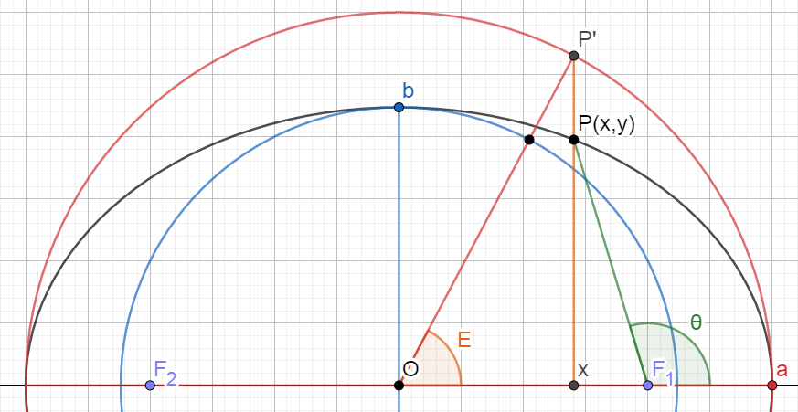

軌道要素と時刻系
Orbiterで使用される軌道要素と時刻系のまとめです。
主にOrbit MFDとシナリオエディタに関係する内容です。
軌道要素
Semi-major axis (SMa) / Semi-minor axis (SMi)
軌道長半径・軌道短半径。記号はそれぞれ \( a \) と \( b \) 。
楕円軌道の2焦点を通り、近点と遠点に至る線分を半分にしたものが軌道長半径。
楕円軌道の中心を通り、軌道長半径に対して垂直な線分を半分にしたのが軌道短半径。
$$ \mathrm {SMa} = \frac{ \mathrm {PeR} + \mathrm {ApR} }{2} $$
Periapsis (Pe) / Apoapsis (Ap)
近点・遠点。
楕円軌道において、中心天体に一番近い点が近点。逆に一番遠いのが遠点。
地球なら近地点(Perigee)、火星なら近火点(Periareion)と呼ぶことがある。
| PeR | Pe Radius | 天体の中心からPeまでの距離 |
|---|---|---|
| ApR | Ap Radius | 天体の中心からApまでの距離 |
| PeA | Pe Altitude | 地表からPeまでの距離 |
| ApA | Ap Altitude | 地表からApまでの距離 |
Radius (Rad)
動径。記号は \( r \) 。
Orbit MFDでは、中心天体の中心から宇宙船までの距離を表す。
Eccentricity (Ecc)
離心率。記号は \( e \) 。
この数字によって宇宙船の軌道がどういう形になるか決まる。
| 円軌道 | \( e = 0 \) |
|---|---|
| 楕円軌道 | \( 0 < e < 1 \) |
| 放物線軌道 | \( e = 1 \) |
| 双曲線軌道 | \( 1 < e \) |
Period (T)
公転周期。記号は \( T \) 。
宇宙船が軌道を1周するのに必要な時間。
Time to Periapsis (PeT) / Time to Apoapsis (ApT)
近点までの・遠点までの時間。
PeTが300なら、300秒後に近点に到達する。
Velocity (Vel)
宇宙船の速度。記号は \( v \) 。
Orbiterではメートル毎秒[m/s]で表される。
Inclination (Inc)
軌道傾斜角。記号は \( i \) 。
基準となる平面（赤道面・黄道面）に対しての軌道面の傾きを表す。
Longitude of ascending node (LAN)
昇交点黄経・赤経。記号は \( \Omega \) 。
基準となる平面（赤道面・黄道面）と、宇宙船の軌道は2点で交差する。
このうち、南から北に通過するものを昇交点と呼ぶ。
LANは、基準となる点（春分点）から昇交点がどれだけ離れているかを表す。
Argument of Periapsis (AgP)
近点引数。記号は \( \omega \) 。
昇交点から近点までの角度。
Longitude of periapsis (LPe)
基準となる点（春分点）から昇交点までの角度に、昇交点から近点までの角度を足したもの。
記号は \( \varpi \) 。
\begin{align} \mathrm {LPe} &= \mathrm {LAN} + \mathrm {AgP} \\ \varpi &= \Omega + \omega \end{align}
True Anomaly (TrA)
真近点角。記号は \( \nu \) もしくは \( \theta \) 。
近点から宇宙船の現在位置までの角度。
True Longitude (TrL)
記号は \( l \) 。
\begin{align} \mathrm {TrL} &= \mathrm {LPe} + \mathrm {TrA} \\ l &= \varpi + \theta \end{align}
Mean Anomaly (MnA)
平均近点角。記号は \( M \) 。
近点からの移動時間を周期で割って、 \( 360 \) （もしくは \( 2 \pi \) ）を掛けたもの。
ちなみに、近点からの移動時間は \( T - \mathrm {PeT} \) によって計算することができる。
Mean Longitude (MnL)
記号は \( L \) 。
\begin{align} \mathrm {MnL} &= \mathrm {MnA} + \mathrm {LPe} \\ L &= M + \varpi \end{align}
Reference frame (Frm): ecliptic (ECL) / equator (EQU)
特定の平面にもとづく基準系(Frame)。
ECL(Ecliptic)は黄道面。EQU(equator)は赤道面。
太陽を中心として、地球は楕円軌道を周回している。
その楕円軌道が存在する平面が黄道面。
現在宇宙船が周回している天体の赤道が存在する平面が赤道面。
地球なら地球の赤道、火星なら火星の軌道が基準になる。
これら平面を基準として、軌道傾斜角などが決定される。
時刻系
| 日本標準時 | JST | |
|---|---|---|
| 協定世界時 | UTC | |
| 修正ユリウス日 | MJD |
Orbiter Date Converter
Orbiter2010 / Orbiter2016には時刻系の変換ツールが付属している。
Orbiter\Utilsフォルダを開く。
Date.exeをダブルクリックするとOrbiter Date Converterが起動する。
UT、MJD、JD、JC2000、Epochの相互変換が可能。
Universal Time (UT)
世界時。
JST（日本標準時）から9時間を引くとUTになる。
Julian Date (JD)
ユリウス日。
紀元前4713年1月1日の正午を開始時点として、そこからの日数。
世界時の正午に日数が増加する。
Modified Julian Date (MJD)
修正ユリウス日。
ユリウス日から \( 2400000.5 \) を引いた数字。
Orbiterでは、IMFDやTransXといった軌道計算MODで使われる。
\( \lfloor \) および \( \rfloor \) の部分では小数点以下を切り捨てる。
また、1月を13月、2月を14月とし、どちらの場合もYから1を引く。
例えば2020年1月の場合、2019年13月として計算する。
西暦からMJDへの変換式（\( Y = \) 年、 \( M = \) 月、 \( D = \) 日）
$$ \mathrm {MJD} = \lfloor 365.25 Y \rfloor + \left \lfloor \frac{Y}{400} \right \rfloor - \left \lfloor \frac{Y}{100} \right \rfloor + \lfloor 30.59 \left( M - 2 \right) \rfloor + D - 678912 $$
MJDから西暦への変換式
\begin{align} A &= \lfloor \mathrm {MJD} + 2468570 \rfloor \\ B &= \lfloor A \div 36524.25 \rfloor \\ C &= A - \lfloor 36524.25B + 0.75 \rfloor \\ E &= \lfloor (C + 1) \div 365.25025 \rfloor \\ F &= C - \lfloor 365.25E \rfloor +31 \\ G &= \lfloor F \div 30.59 \rfloor \\ H &= \lfloor G \div 11 \rfloor \\ \\ D &= F - \lfloor 30.59G \rfloor \\ M &= G - 12H +2 \\ Y &= 100(B - 49) + E +H \end{align}
Julian Century (JC2000)
ユリウス世紀。
1日を86400秒として、365.25日がユリウス年、36525日がユリウス世紀。
2000年1月1日の正午を0とし、2100年1月1日の正午が1となる。
ユリウス日とは無関係。
Epoch
元期。
天文・宇宙の分野においては、天体の位置や軌道が観測された時刻を意味する。
Orbiterのシナリオエディタでは、整数部分で年（西暦）、それより小さな日時を小数で表す。
例えば、Epochが2020.5のとき、通常の時刻表示では2020年7月2日3時になる。
Ground Elapsed Time (GET)
打ち上げからの経過時間。
打ち上げの1秒前を0とする。時 : 分 : 秒で表す。
アポロ計画など、スペースシャトル以前に使われていた。
参照： Apollo by the Numbers - Introducion
Mission Elapsed Time (MET)
打ち上げからの経過時間。
スペースシャトル以降に使われるようになった。SRBの点火を0とする。
日 / 時 : 分 : 秒で表す。
参照： Mission Elapsed Time Explained
平均近点角とケプラー方程式
| Ecc | \( e \) | ||
|---|---|---|---|
| MnA | \(M \) | ||
| \( E \) | |||
| TrA | \( \theta \) | ||
平均近点角が近点からの移動時間を変換した仮想的な角度であるのに対し、真近点角は軌道上での実際の位置を表している。
平均近点角とケプラー方程式によって、任意の時刻における天体（惑星・宇宙機）の位置を計算できる。
- 天体観測によって、対象の天体の軌道（離心率など）を調べる。
天体が近点を通過した時刻を確認する。 - 近点通過時刻から、任意の時刻までの経過時間を調べる。
この経過時間を平均近点角に変換する。 - ケプラー方程式によって、平均近点角から離心近点角を計算する。
- 離心近点角から、さらに真近点角を計算する。
ケプラー方程式 $$ M = E - e \sin E $$
\(M \) は平均近点角、 \( e \) は離心率、 \( E \) は離心近点角を表す。※
すでにわかっている \( M \) と \( e \) から、 \( E \) の値を計算する。
この式を簡単に解くことはできないため、ニュートン・ラフソン法などを使って近似解を求める。
※離心近点角 \( E \) はOrbiterでは表示されない
\( E \) （離心近点角）と \( \theta \) （真近点角）には、以下のような関係がある。
$$ \tan \frac{\theta}{2} = \sqrt{ \frac{1+e}{1-e} } \tan \frac{E}{2} $$
したがって、 \( E \) からさらに \( \theta \) を計算することができる。
